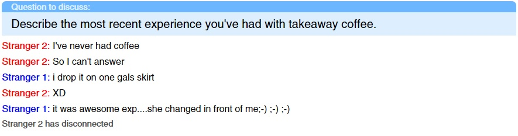
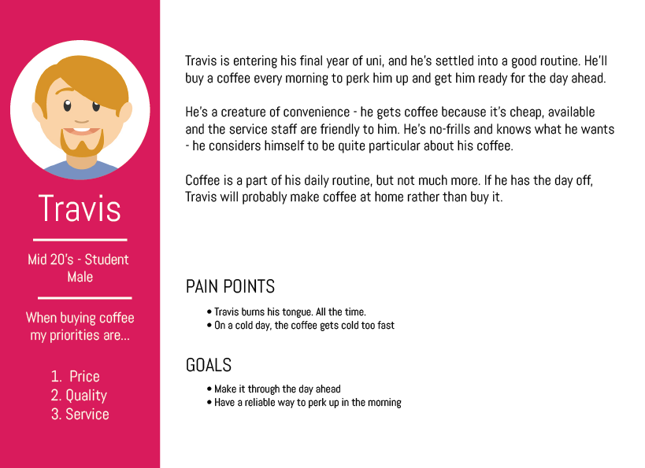
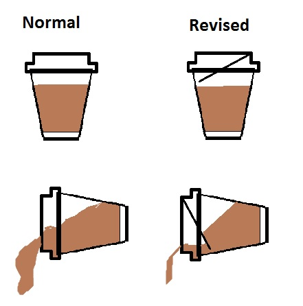

I love your company, Symplicit's style of UX really appeals to me - and I’d love to work for you guys.
So I thought I'd do a little project to show you my process, and how I do UX.
When you’re buying a coffee, there’s a lot that can go wrong - the quality of the beans, how the coffee is prepared, all variables which change from café to café. The one thing that remains consistent no matter where you go is the cup. This idea prompted me to start thinking about whether the experience of drinking coffee can be improved by modifying the cup itself rather than the coffee it contains.
However, while the standard design for a takeaway coffee cup is completely serviceable, I want to find out if there are any avenues for improvement on it - or if there are any hidden pain points.
Determine if it’s possible to improve the experience of drinking coffee by modifying the design of the standard paper cup.
To achieve this, the first step was to find out what people felt about the cups they drank their coffee from - and the experience of purchasing and enjoying a coffee as a whole. Due to lack of availability of willing test participants in my hometown I took a more novel approach, sourcing my test participants online. I made attempts finding people on a number of online services which would allow you to sign up anonymously and meet new people.
For my first attempt, I began by picking out a website which allowed you to ask a prompt question, and two random participants would discuss it. The idea behind this was that giving two people a topic and allowing to them discuss it would yield more ‘honest’ or candid results.
Randomized chat participants - maybe not the wisest decision.
The results of the randomized testing were quite poor. Very few participants would choose to discuss the topic, and being unable to guide or mediate the discussion meant that things quickly drifted off topic. With results from over 100 sessions, only 3 people gave relevant responses; two being that the coffee was too hot, and the other was unhappy that the barista had gotten their name wrong.
Unsatisfied, I made a second attempt at gaining some insights into the issue, sourcing interview participants from internet forums like Reddit, and conducted interviews with 3 people. All participants were male and in their mid-20s.
While the results were much more promising for one-on-one, people weren’t particularly frustrated with their experience. One participant felt that the problem was with the lid.
“Another annoying thing with the paper mugs...the lid. For me it would be better if it was a see through, so i can see when the coffie reaches the hole :-P maybe this sounds weird, but for people with "cat tongues" that would be really good :-D”
(full transcript here)
In this case, ‘cat tongue’ means that someone has a sensitive tongue. Not being able to see the amount of coffee he was drinking, the participant would accidentally take too large a sip and burn his tongue. Additionally, the participant remarked that:
“thanks to the bad insulation, it's not long until it doesn't burn anymore :-P but i like my coffie warm ;-)”
If I had more time, I think that a few rounds of contextual inquiry from people drinking coffee might have revealed more about what people are thinking and feeling while they drink coffee. My three major takeaways from this round of user research were -
I synthesized the information I gathered into the persona below -
With a persona, I was able to get a better idea for whom I was designing. This helped me then identify the problem which I wanted to develop a solution for. If you’re interested in the specific outcomes of the interviews, I’ve linked them below in the appendices section.
Coffee is great, but when you’re drinking, it’s easy to drink too much at once and burn your tongue. However, once it reaches a palatable temperature it quickly becomes cold and unenjoyable.
By reducing the amount you can inadvertently take in a single sip, you give the coffee a chance to cool slightly - thus bringing it to a palatable level. To do this, you need to separate a portion of the coffee from the rest, so the majority of it stays hot until you’re ready to drink it.
With that solution statement in mind, I began thinking about a mechanism which could help regulate the flow of coffee as you drink - something that works of its own accord without any additional setup from the user.
While there are other solutions to moderating the temperature of coffee - such as Coffee Joulies - I want to focus on something that doesn’t require anyone buying a coffee to need to bring or carry anything extra.
I came up with a small ‘gate’ to regulate how much coffee can reach the aperture in the lid at any given time. By separating each sip from the main body of coffee, it allows it to cool faster while not allowing the remainder of the coffee to become cold.
However, by the same token once you get to the end of the cup, it may be annoying to get the last few measures of coffee out. Another possible roadblock is that people might just like drinking their coffee a lot faster and a system like this could be annoying for them.
A sketch of a possible design which could achieve this
I think one of the major considerations in having a system like this, where you’re modifying the actual shape of the lid or cup is to ensure that they stay stackable.
Moving forward, I feel there's a need for more research - to see how people behave while drinking coffee and what they're thinking at the time. Ideally, I'd like to interview people while they drank their coffee. I'd then have to construct and test a prototype; have people drink coffee from it, see if it addresses the problem and whether the design needs iteration - which it most likely would.
At this stage, there's certainly compelling evidence to look further into it. People are generally indifferent to the cups that they drink from, which makes me feel that there's room to make them into something that can genuinely improve the experience. All I need to do is find out.
Randomized Chat Results
Interview Transcripts -
Participant 1
Participant 2
Participant 3
To get in touch with me either via e-mail on
nik.fenech@gmail.com, or mobile at 0411 106 392